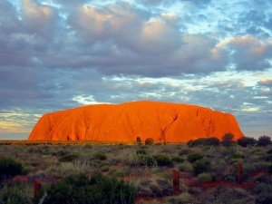
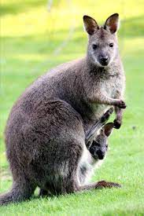

Koalas Herkunft Australien
Landschaft
Zwei Fünftel des Landes liegen in den Tropen. Der australische Busch umfasst eine große
Vielfalt von Landschaften – vom Regenwald bis hin zu weiten Savannen. Das Zentrum des Kontinents besteht aus einem
mit Wüsten und Halbwüsten bedeckten Plateau. Im Kontrast dazu sind viele Küstengebiete sehr fruchtbar; besonders
der Landstreifen östlich der Great Dividing Range, die sich vom Norden Queenslands bis zum Süden Victorias
hinzieht. Der höchste Berg Australiens ist der Mount Kosciusko (2.230 Meter) in den australischen Alpen.

Vegetation, Pflanzen
Von den rund 20.000 heimischen Pflanzenarten in Australien sind ca. 85 % ausschließlich auf diesem Kontinent zu
finden. Typisch für die australische Vegetation sind die Eukalyptus- und Akazienbäume. Von beiden gibt es über 600
Arten.
Tierarten
Typische Vertreter der australischen Tierwelt sind die Beuteltiere. Bekannte Vertreter sind die
Kängurus mit über 40 Arten, der Koala
(Seite1), der Wombat, der
Beutelteufel, die Beutelmaus
und die Gattung der
Kletterbeutler (Possums). Einzigartig auf der ganzen Welt sind Eier legende Säugetiere (Kloakentiere), die nur in
Australien und Neuguinea vorkommen.

Traditionelles Australien
Alice Springs Camel Cup
Obwohl die Kamele nicht aus Australien stammen, sondern aus Afrika gebracht wurden, haben sie sich dennoch in eine
große touristische Attraktion verwandelt. Der Wettbewerb von Alice Springes im Northern Territory ist eines der
bekanntesten Rennen. Dieser Wettbewerb findet seit 1970 statt und gehört zu den beliebtesten Veranstaltungen wegen
seiner zwanglosen und festlichen Atmosphäre.